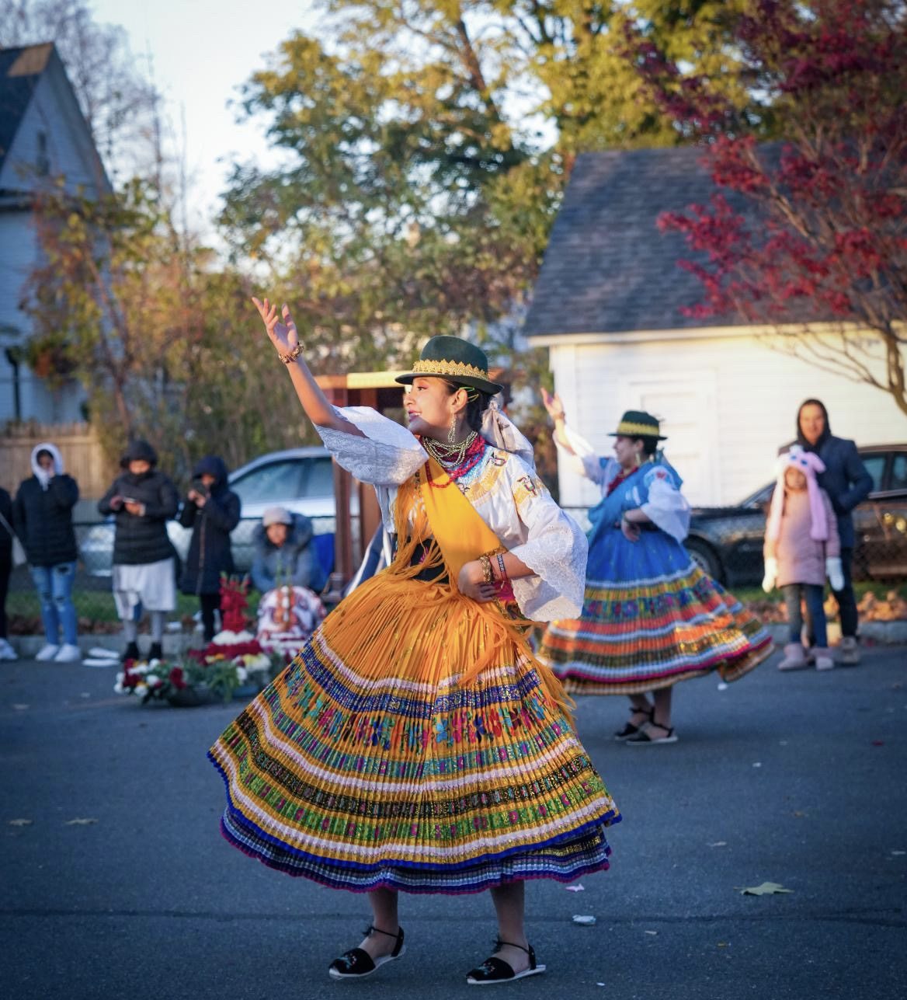

Welcome to my MEDPL 150 portfolio site.
My name is Britany Palaguachi, and I am full-time student, part-time worker, and 25/8 mother. Getting older and having different experiences has made me rethink about life itself, in a way romanticize it and look further into it. I like dancing ecuadorian traditional dances and that allowed me to connect ti my ecuadorean roots. Going to college has opened my mind to different tracks of thinking. Helping run a restaurant has helped me understand the business world in a way and help socialize with others. Being a mother has helped me reinforce my love in life because it helps me realize every moment is precious, especially because it doesn't come back. But a good way of keeping those memories intact is taking pictures. I used to hate taking pictures, I thought it was a waste of storage on my phone. But now I pay for extra storage in order to take pictures of everything my toddler does.